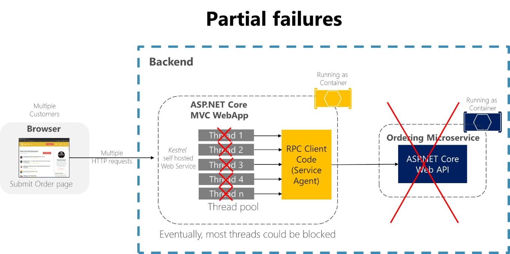
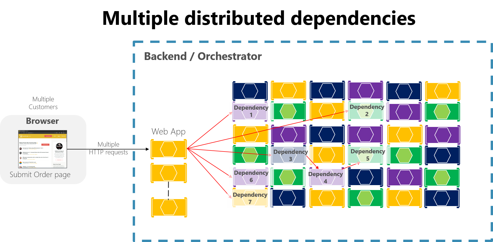
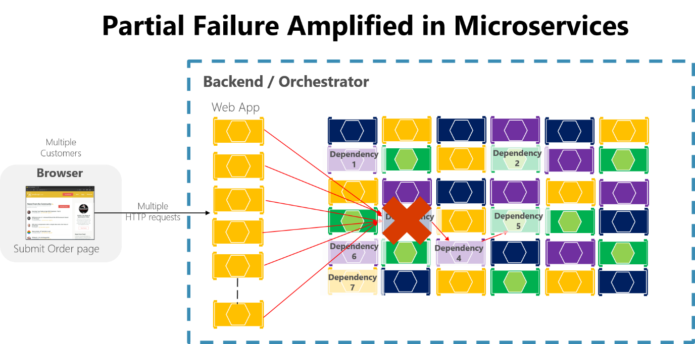
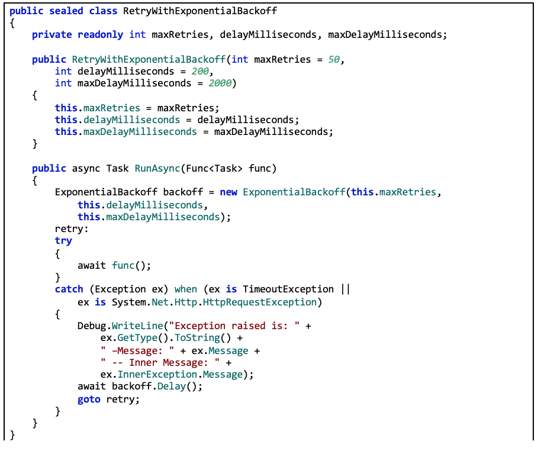
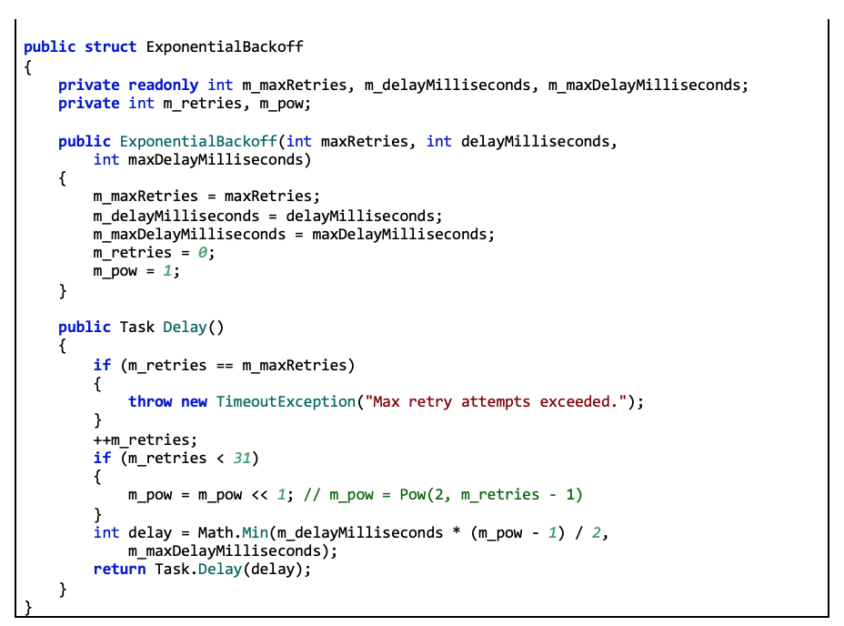
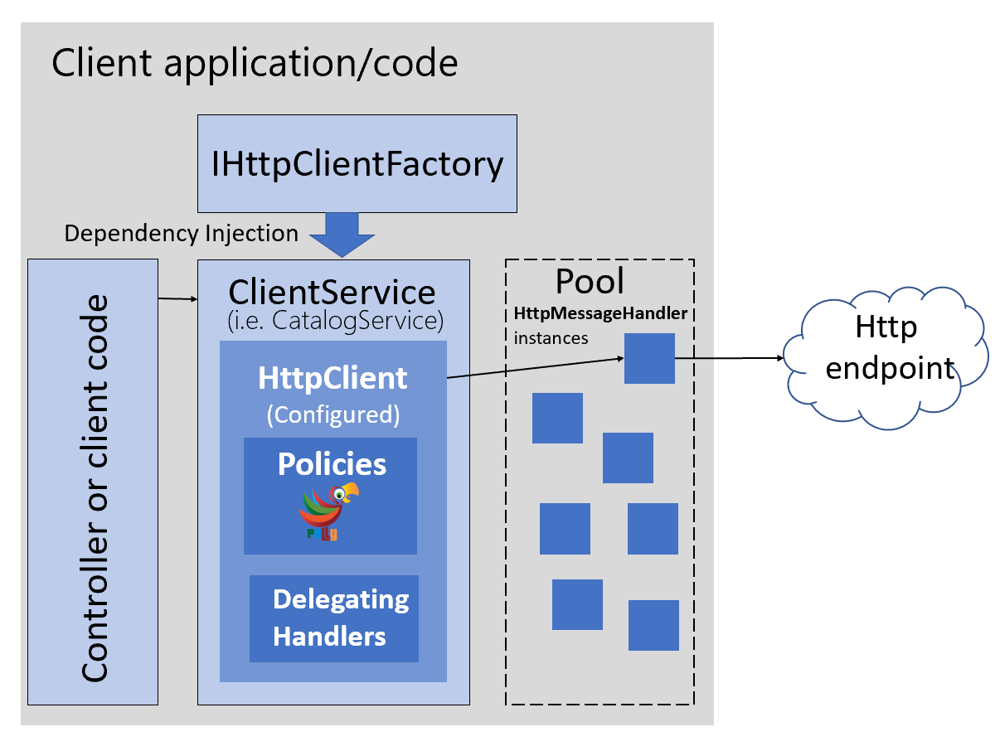

Implement Resilient Applications
Your microservice and cloud-based applications must embrace the partial failures that will certainly occur eventually. You must design your application to be resilient to those partial failures.
Resiliency is the ability to recover from failures and continue to function. It isn’t about avoiding failures but accepting the fact that failures will happen and responding to them in a way that avoids downtime or data loss. The goal of resiliency is to return the application to a fully functioning state after a failure.
It’s challenging enough to design and deploy a microservices-based application. But you also need to keep your application running in an environment where some sort of failure is certain. Therefore, your application should be resilient. It should be designed to cope with partial failures, like network outages or nodes or VMs crashing in the cloud. Even microservices (containers) being moved to a different node within a cluster can cause intermittent short failures within the application.
The many individual components of your application should also incorporate health monitoring features. By following the guidelines in this chapter, you can create an application that can work smoothly in spite of transient downtime or the normal hiccups that occur in complex and cloud-based deployments.
In distributed systems like microservices-based applications, there’s an ever-present risk of partial failure. For instance, a single microservice/container can fail or might not be available to respond for a short time, or a single VM or server can crash. Since clients and services are separate processes, a service might not be able to respond in a timely way to a client’s request. The service might be overloaded and responding very slowly to requests or might simply not be accessible for a short time because of network issues.
For example, consider the Order details page from the eShopOnContainers sample application. If the ordering microservice is unresponsive when the user tries to submit an order, a bad implementation of the client process (the MVC web application)—for example, if the client code were to use synchronous RPCs with no timeout—would block threads indefinitely waiting for a response. Besides creating a bad user experience, every unresponsive wait consumes or blocks a thread, and threads are extremely valuable in highly scalable applications. If there are many blocked threads, eventually the application’s runtime can run out of threads. In that case, the application can become globally unresponsive instead of just partially unresponsive, as shown in Figure 8-1.

Figure 8-1. Partial failures because of dependencies that impact service thread availability
In a large microservices-based application, any partial failure can be amplified, especially if most of the internal microservices interaction is based on synchronous HTTP calls (which is considered an anti-pattern). Think about a system that receives millions of incoming calls per day. If your system has a bad design that’s based on long chains of synchronous HTTP calls, these incoming calls might result in many more millions of outgoing calls (let’s suppose a ratio of 1:4) to dozens of internal microservices as synchronous dependencies. This situation is shown in Figure 8-2, especially dependency #3.

Figure 8-2. The impact of having an incorrect design featuring long chains of HTTP requests
Intermittent failure is guaranteed in a distributed and cloud-based system, even if every dependency itself has excellent availability. It’s a fact you need to consider.
If you do not design and implement techniques to ensure fault tolerance, even small downtimes can be amplified. As an example, 50 dependencies each with 99.99% of availability would result in several hours of downtime each month because of this ripple effect. When a microservice dependency fails while handling a high volume of requests, that failure can quickly saturate all available request threads in each service and crash the whole application.

Figure 8-3. Partial failure amplified by microservices with long chains of synchronous HTTP calls
To minimize this problem, in the section Asynchronous microservice integration enforce microservice’s autonomy, this guide encourages you to use asynchronous communication across the internal microservices.
In addition, it’s essential that you design your microservices and client applications to handle partial failures—that is, to build resilient microservices and client applications.
Strategies for dealing with partial failures include the following.
Use asynchronous communication (for example, message-based communication) across internal microservices. It’s highly advisable not to create long chains of synchronous HTTP calls across the internal microservices because that incorrect design will eventually become the main cause of bad outages. On the contrary, except for the front-end communications between the client applications and the first level of microservices or fine-grained API Gateways, it’s recommended to use only asynchronous (message-based) communication once past the initial request/response cycle, across the internal microservices. Eventual consistency and event-driven architectures will help to minimize ripple effects. These approaches enforce a higher level of microservice autonomy and therefore prevent against the problem noted here.
Use retries with exponential backoff. This technique helps to avoid short and intermittent failures by performing call retries a certain number of times, in case the service was not available only for a short time. This might occur due to intermittent network issues or when a microservice/container is moved to a different node in a cluster. However, if these retries are not designed properly with circuit breakers, it can aggravate the ripple effects, ultimately even causing a Denial of Service (DoS).
Work around network timeouts. In general, clients should be designed not to block indefinitely and to always use timeouts when waiting for a response. Using timeouts ensures that resources are never tied up indefinitely.
Use the Circuit Breaker pattern. In this approach, the client process tracks the number of failed requests. If the error rate exceeds a configured limit, a “circuit breaker” trips so that further attempts fail immediately. (If a large number of requests are failing, that suggests the service is unavailable and that sending requests is pointless.) After a timeout period, the client should try again and, if the new requests are successful, close the circuit breaker.
Provide fallbacks. In this approach, the client process performs fallback logic when a request fails, such as returning cached data or a default value. This is an approach suitable for queries, and is more complex for updates or commands.
Limit the number of queued requests. Clients should also impose an upper bound on the number of outstanding requests that a client microservice can send to a particular service. If the limit has been reached, it’s probably pointless to make additional requests, and those attempts should fail immediately. In terms of implementation, the Polly Bulkhead Isolation policy can be used to fulfill this requirement. This approach is essentially a parallelization throttle with SemaphoreSlim as the implementation. It also permits a “queue” outside the bulkhead. You can proactively shed excess load even before execution (for example, because capacity is deemed full). This makes its response to certain failure scenarios faster than a circuit breaker would be, since the circuit breaker waits for the failures. The BulkheadPolicy object in Polly exposes how full the bulkhead and queue are, and offers events on overflow so can also be used to drive automated horizontal scaling.
Retries with exponential backoff is a technique that retries an operation, with an exponentially increasing wait time, up to a maximum retry count has been reached (the exponential backoff). This technique embraces the fact that cloud resources might intermittently be unavailable for more than a few seconds for any reason. For example, an orchestrator might be moving a container to another node in a cluster for load balancing. During that time, some requests might fail. Another example could be a database like SQL Azure, where a database can be moved to another server for load balancing, causing the database to be unavailable for a few seconds.
There are many approaches to implement retries logic with exponential backoff.
For Azure SQL DB, Entity Framework (EF) Core already provides internal database connection resiliency and retry logic. But you need to enable the Entity Framework execution strategy for each DbContext connection if you want to have resilient EF Core connections.
For instance, the following code at the EF Core connection level enables resilient SQL connections that are retried if the connection fails.
When retries are enabled in EF Core connections, each operation you perform using EF Core becomes its own retriable operation. Each query and each call to SaveChanges will be retried as a unit if a transient failure occurs.
However, if your code initiates a transaction using BeginTransaction, you’re defining your own group of operations that need to be treated as a unit. Everything inside the transaction has to be rolled back if a failure occurs.
If you try to execute that transaction when using an EF execution strategy (retry policy) and you call SaveChanges from multiple DbContexts, you’ll get an exception like this one:
System.InvalidOperationException: The configured execution strategy ‘SqlServerRetryingExecutionStrategy’ does not support user initiated transactions. Use the execution strategy returned by ‘DbContext.Database.CreateExecutionStrategy()’ to execute all the operations in the transaction as a retriable unit.
The solution is to manually invoke the EF execution strategy with a delegate representing everything that needs to be executed. If a transient failure occurs, the execution strategy will invoke the delegate again. For example, the following code show how it’s implemented in eShopOnContainers with two multiple DbContexts (_catalogContext and the IntegrationEventLogContext) when updating a product and then saving the ProductPriceChangedIntegrationEvent object, which needs to use a different DbContext.
The first DbContext is _catalogContext and the second DbContext is within the _integrationEventLogService object. The Commit action is performed across all DbContext objects using an EF execution strategy.
To achieve this multiple DbContext commit, the SaveEventAndCatalogContextChangesAsync uses a ResilientTransaction class, as shown in the following code:
The ResilientTransaction.ExecuteAsync method basically begins a transaction from the passed DbContext (_catalogContext) and then makes the EventLogService use that transaction to save changes from the IntegrationEventLogContext and then commits the whole transaction.
To create resilient microservices, you need to handle possible HTTP failure scenarios. One way of handling those failures, although not recommended, is to create your own implementation of retries with exponential backoff.
Important note: This section shows you how you could create your own custom code to implement HTTP call retries. However, it isn’t recommended to do it on your own but to use more powerful and reliable while simpler to use mechanisms, such as HttpClientFactory with Polly, available since .NET Core 2.1. Those recommended approaches are explained in the next sections.
As an initial exploration, you could implement your own code with a utility class for exponential backoff as in RetryWithExponentialBackoff.cs, plus code like the following.
Using this code in a client C# application (another Web API client microservice, an ASP.NET MVC application, or even a C# Xamarin application) is straightforward. The following example shows how, using the HttpClient class.
Remember that this code is suitable only as a proof of concept. The next sections explain how to use more sophisticated approaches while simpler, by using HttpClientFactory. HttpClientFactory is available since .NET Core 2.1, with proven resiliency libraries like Polly.
HttpClientFactory is an opinionated factory, available since .NET Core 2.1, for creating HttpClient instances to be used in your applications.
The original and well-known HttpClient class can be easily used, but in some cases, it isn’t being properly used by many developers.
As a first issue, while this class is disposable, using it with the using statement is not the best choice because even when you dispose HttpClient object, the underlying socket is not immediately released and can cause a serious issue named ‘sockets exhaustion’. For more information about this issue, see You’re using HttpClient wrong and it’s destabilizing your software blog post.
Therefore, HttpClient is intended to be instantiated once and reused throughout the life of an application. Instantiating an HttpClient class for every request will exhaust the number of sockets available under heavy loads. That issue will result in SocketException errors. Possible approaches to solve that problem are based on the creation of the HttpClient object as singleton or static, as explained in this Microsoft article on HttpClient usage.
But there’s a second issue with HttpClient that you can have when you use it as singleton or static object. In this case, a singleton or static HttpClient doesn’t respect DNS changes, as explained in this issue at the .NET Core GitHub repo.
To address those mentioned issues and make the management of HttpClient instances easier, .NET Core 2.1 introduced a new HttpClientFactory that can also be used to implement resilient HTTP calls by integrating Polly with it.
HttpClientFactory is designed to:
There are several ways that you can use HttpClientFactory in your application:
For the sake of brevity, this guidance shows the most structured way to use HttpClientFactory that’s to use Typed Clients (Service Agent pattern), but all options are documented and are currently listed in this article covering HttpClientFactory usage.
So, what’s a “Typed Client”? It’s just an HttpClient that’s configured upon injection by the DefaultHttpClientFactory.
The following diagram shows how Typed Clients are used with HttpClientFactory:

Figure 8-4. Using HttpClientFactory with Typed Client classes.
First, setup HttpClientFactory in your application, adding a reference to the Microsoft.Extensions.Http package that includes the AddHttpClient() extension method for IServiceCollection. This extension method registers the DefaultHttpClientFactory to be used as a singleton for the interface IHttpClientFactory. It defines a transient configuration for the HttpMessageHandlerBuilder. This message handler (HttpMessageHandler object), taken from a pool, is used by the HttpClient returned from the factory.
In the next code, you can see how AddHttpClient() can be used to register Typed Clients (Service Agents) that need to use HttpClient.
Registering the client services as shown in the previous code, makes the DefaultClientFactory create an HttpClient configured specifically for each service, as we’ll explain in the next paragraph.
Just by registering your client service class with AddHttpClient(), the HttpClient object that will be injected into your class will use the configuration and policies provided upon registration. In the next sections, you’ll see those policies like Polly’s retries or circuit-breakers.
Each time you get an HttpClient object from the IHttpClientFactory, a new instance is returned. But each HttpClient uses an HttpMessageHandler that’s pooled and reused by the IHttpClientFactory to reduce resource consumption, as long as the HttpMessageHandler’s lifetime hasn’t expired.
Pooling of handlers is desirable as each handler typically manages its own underlying HTTP connections; creating more handlers than necessary can result in connection delays. Some handlers also keep connections open indefinitely, which can prevent the handler from reacting to DNS changes.
The HttpMessageHandler objects in the pool have a lifetime that’s the length of time that an HttpMessageHandler instance in the pool can be reused. The default value is two minutes, but it can be overridden per Typed Client. To override it, call SetHandlerLifetime() on the IHttpClientBuilder that’s returned when creating the client, as shown in the following code:
Each Typed Client can have its own configured handler lifetime value. Set the lifetime to InfiniteTimeSpan to disable handler expiry.
As a previous step, you need to have your Typed Client classes defined, such as the classes in the sample code, like ‘BasketService’, ‘CatalogService’, ‘OrderingService’, etc. – A Typed Client is a class that accepts an HttpClient object (injected through its constructor) and uses it to call some remote HTTP service. For example: